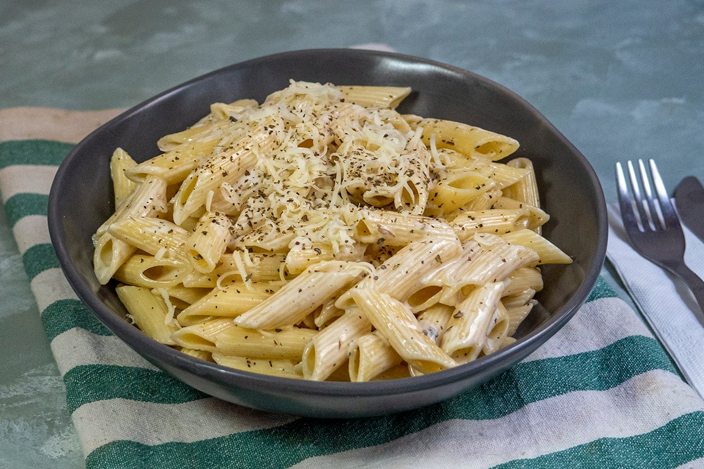

...Kremalı Makarna Tarifi...
Makarna tarifleri arasında en sevilen tariflerin başında o geliyor! Tam ayarında haşlanan makarna, kremalı sosu içine çektiğinde tek başına bile tabak tabak yemek isteyeceğiniz bir lezzete dönüşüyor. O yüzden lokanta menülerinin vazgeçilmezlerinden, şık akşam yemeklerinin de yapımı en kolay ve ekonomik lezzetlerinden biri oluyor. Söz konusu kremalı makarnaysa, peynir olmadan da olmaz. Biz rendelenmiş kaşar peyniri kullandık ama damak tadınıza uygun her peyniri kullanabilirsiniz. Karşınızda tüm püf noktalarıyla nefis mi nefis kremalı makarna tarifi!
Tarif:Ayşegül Uslu
Kaç Kişilik
Hazırlama Süresi
Pişirme Süresi
5
5
15
Kremalı Makarna Tarifi İçin Malzemeler
- 1 paket makarna
- 1 tatlı kaşığı tuz
- 1 paket krema
- 1/2 çay kaşığı karabiber
- 1/2 çay kaşığı tuz
- 1/2 çay kaşığı kuru fesleğen
- 4 yemek kaşığı rendelenmiş kaşar peyniri
Kremalı Makarna Tarifi Nasıl Yapılır
- 1 tatlı kaşığı tuz
- 1 paket krema
- 1/2 çay kaşığı karabiber
- 1/2 çay kaşığı tuz
- 1/2 çay kaşığı kuru fesleğen
- 4 yemek kaşığı rendelenmiş kaşar peyniri
